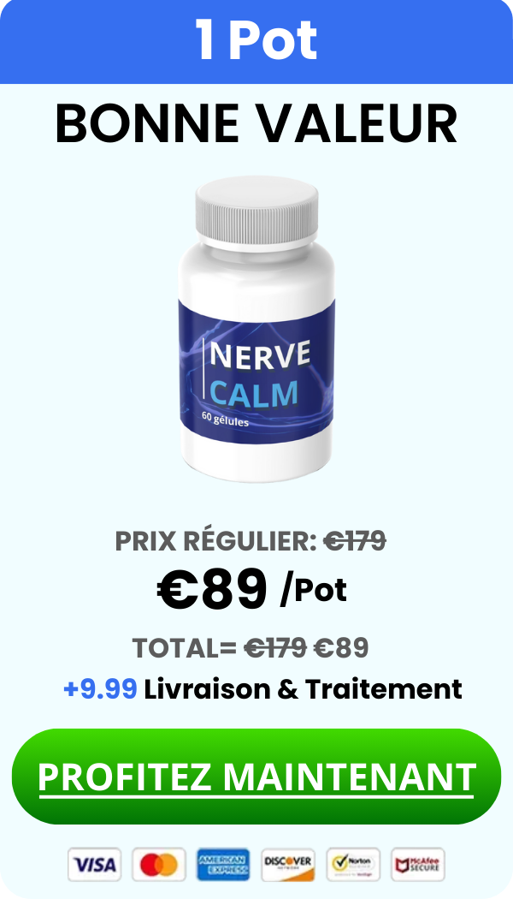
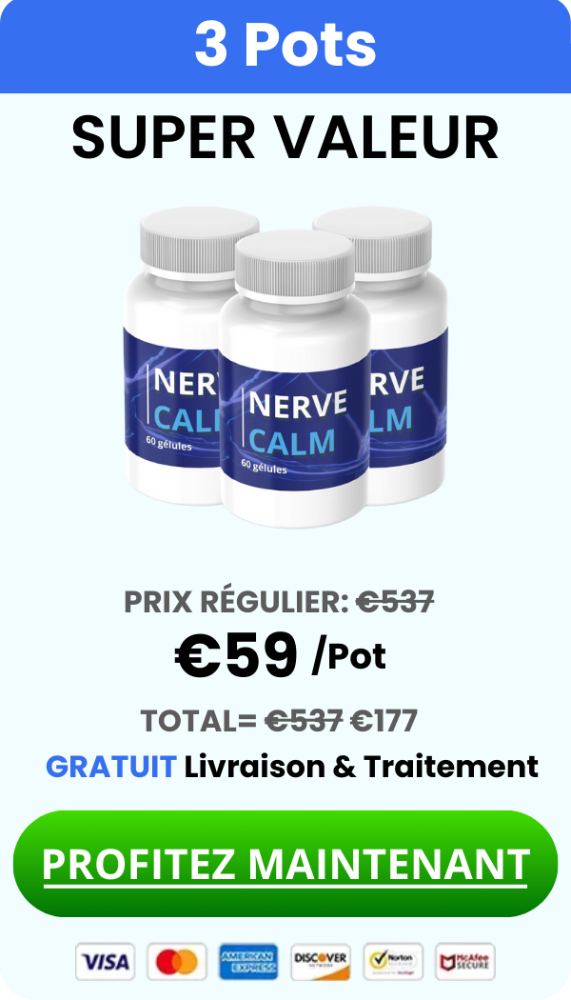
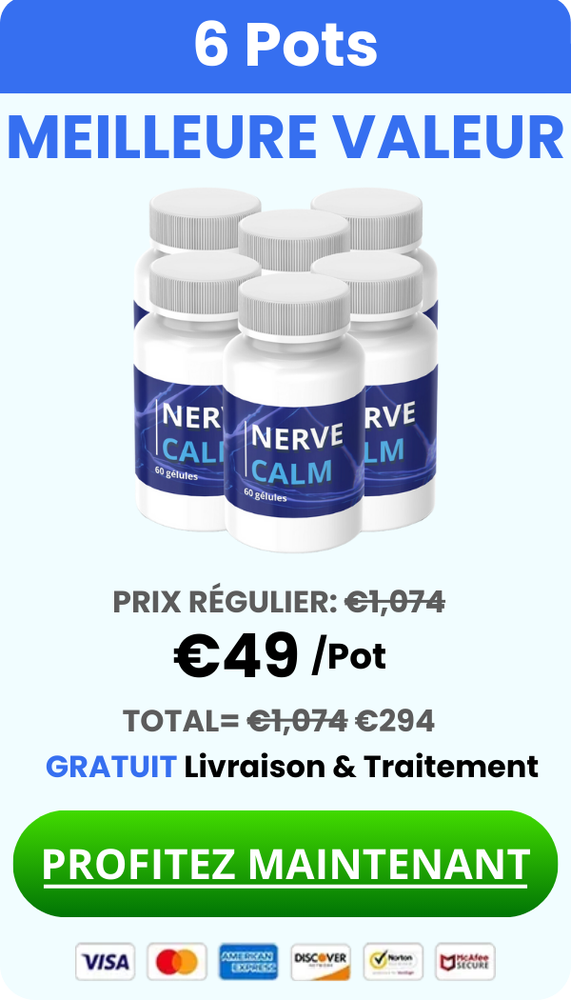

OBTENEZ VOTRE PACK DE RÉDUCTION NERVE CALM CI-DESSOUS
DISPONIBLE UNIQUEMENT TANT QUE LES STOCKS DURANT !
18 bouteilles en stock
Note moyenne des clients 4.93



GARANTIE DE SATISFACTION À 100%
NERVE CALM est accompagné d'une garantie de remboursement à 100% pendant 60 jours à compter de la date de votre achat initial.
Questions fréquemment posées
Qu'est-ce que NERVE CALM ?+
NERVE CALM est un complément spécialement formulé pour soulager l'inconfort du nerf sciatique. Il repose sur des recherches approfondies et contient une combinaison d'ingrédients scientifiquement prouvés qui ciblent la « trinité de l'inconfort nerveux », apportant un soulagement, favorisant la santé des nerfs et combattant l'inflammation. La formule inclut l'ingrédient principal, le palmitoylethanolamide (PEA), reconnu pour soutenir une réponse inflammatoire saine et réduire les inconforts mineurs.
Quand ma commande arrivera-t-elle ?+
À partir de ce mois, le stock est disponible et lorsque vous commandez maintenant, vous recevrez instantanément un e-mail de confirmation de commande. Soyez assuré(e) que nous travaillons d'arrache-pied pour expédier votre commande le plus rapidement possible !
Nous expédierons votre commande directement à votre domicile ou bureau via un transporteur premium, et vous la recevrez dans un délai de 7 à 14 jours ouvrables à compter de votre commande. Les produits sont expédiés depuis la Floride, aux États-Unis, et nous vous enverrons un e-mail de notification d'expédition avec un numéro de suivi dès que votre commande sera expédiée, afin que vous puissiez la suivre jusqu'à votre porte.
Quelle est la politique de remboursement ?+
Votre commande est accompagnée d'une garantie de remboursement.
Garantie sans risque de 60 jours
Il s'agit d'une garantie de remboursement à 100% pendant 60 jours qui élimine tout risque et vous permet d'essayer NERVE CALM dès maintenant.
Est-il sûr d'acheter en ligne ?+
Acheter en ligne est absolument l'une des méthodes d'achat les plus sûres ! Les certificats SSL authentifient notre identité et chiffrent les informations que les visiteurs saisissent sur notre site. Cela empêche les voleurs d'intercepter les échanges entre notre page Web et un autre ordinateur. Lorsqu'un certificat SSL est installé, vous pouvez être assuré(e) que les informations que vous envoyez sont sécurisées et ne peuvent pas être consultées par des cybercriminels.
Notre certificat SSL permet au navigateur et au serveur Web d'établir une connexion sécurisée et chiffrée. Le processus de « poignée de main » SSL, qui établit la session sécurisée, se déroule discrètement en arrière-plan sans interrompre votre expérience d'achat. Une icône de cadenas dans la barre d'état du navigateur et le préfixe « https:// » dans l'URL sont les seules indications visibles d'une session sécurisée en cours.
La page de paiement NERVE CALM est sécurisée par un certificat SSL de serveur Web Symantec Class 3 EV. Les transactions sur le site sont protégées par un chiffrement SSL jusqu'à 256 bits. Le chiffrement signifie que toutes les données transmises sont brouillées, de sorte que même si quelque chose se passait mal, elles seraient inintelligibles pour tout destinataire non autorisé.
Nous utilisons un processeur de cartes de crédit tiers qui répond aux normes internationales les plus strictes en matière de sécurité des données pour gérer vos paiements par carte de crédit, de sorte que personne n'a jamais accès à vos informations de carte. Nous NE conservons PAS votre numéro de carte de crédit.
Chez NERVE CALM Labs, nous comprenons que vous nous confiez votre sécurité financière lorsque vous achetez chez nous en ligne. Nous avons tout mis en œuvre pour garantir la sécurité de vos informations du début à la fin, et nous vous remercions de la confiance que vous nous accordez.
En quoi NERVE CALM est-il différent de tout ce que j'ai essayé ?+
NERVE CALM se distingue par sa formulation unique qui combine le glycinate de magnésium avec d'autres ingrédients puissants, notamment l'acide alpha-lipoïque, le trévo, la L-Carnitine et le curcuma. Ces ingrédients agissent ensemble pour soulager l'inconfort du nerf sciatique, réduire l'inflammation et favoriser la santé des nerfs sur le long terme. De plus, NERVE CALM offre des avantages tels que la réduction de l'inconfort, le soutien à la relaxation musculaire et l'amélioration de la fonction nerveuse globale pour une vie plus saine.
Comment NERVE CALM se compare-t-il aux autres compléments similaires ?+
NERVE CALM se distingue des autres compléments similaires par son approche globale et son solide soutien scientifique. Alors que de nombreux compléments se concentrent uniquement sur un soulagement temporaire de l'inconfort, NERVE CALM vise à traiter les causes sous-jacentes de l'inconfort du nerf sciatique, à lutter contre l'inflammation, à favoriser la régénération nerveuse et à améliorer la santé globale des nerfs. L'efficacité des ingrédients de NERVE CALM est étayée par des études cliniques et des avis d'utilisateurs rapportant des améliorations significatives en peu de temps.
Cela fonctionnera-t-il pour moi ?+
Chaque personne est différente, mais NERVE CALM® est remarquablement efficace pour presque tous ceux qui l'ont essayé. Il contient des ingrédients validés cliniquement avec de nombreuses preuves. Mais si, pour une raison quelconque, vous n'êtes pas satisfait(e) de NERVE CALM, rappelez-vous que vous pouvez toujours le retourner et récupérer 100% de votre investissement.
Comment le prendre ?+
Prendre NERVE CALM n'a jamais été aussi simple. Il vous suffit de prendre 2 capsules, le matin ou le soir. Chaque capsule est petite, facile à avaler et agit immédiatement.
Combien de temps faut-il pour voir les effets ?+
Vous commencerez à ressentir rapidement des bienfaits sur l'humeur, le sommeil et l'énergie.
En ce qui concerne la nutrition et le soutien d'une fonction nerveuse adéquate, cela ne se fera pas du jour au lendemain : notre formule utilise la forme la plus biodisponible de chaque ingrédient afin que ceux-ci soient absorbés plus rapidement que dans d'autres compléments.
Certains clients ont constaté des résultats en aussi peu qu'une semaine, tandis que pour la plupart, il faudra 3 à 6 mois pour obtenir les meilleurs résultats.
Chaque cas est différent – et plusieurs facteurs peuvent influencer le temps nécessaire pour voir une amélioration. Nous recommandons fortement de prendre NERVE CALM® pendant au moins 4 à 6 mois pour maximiser vos chances de succès.
Nous comprenons également que, malgré le taux de réussite élevé de notre formule, elle ne fonctionnera pas pour tout le monde. C'est pourquoi nous offrons une garantie de 60 jours sur votre dernière commande. Si NERVE CALM® ne vous convient pas, nous vous offrons une année entière pour demander un remboursement (hors frais de port) sur votre dernière commande.
Y a-t-il des effets secondaires ?+
Tous les ingrédients de NERVE CALM® sont sûrs et n'ont pas montré d'effets secondaires significatifs. Cependant, chaque personne étant différente, assurez-vous de toujours consulter votre médecin pour savoir si NERVE CALM® vous convient.
Puis-je prendre NERVE CALM avec mes médicaments actuels ?+
Les ingrédients de NERVE CALM® sont généralement sans danger lorsqu'ils sont pris avec des médicaments sur ordonnance, mais nous vous recommandons de consulter d'abord votre médecin ou votre pharmacien. Comme certains médicaments peuvent temporairement inhiber la capacité du corps à absorber les nutriments, nous vous conseillons de prendre NERVE CALM® soit 30 minutes avant, soit après avoir pris vos médicaments. Cela permettra une meilleure absorption des ingrédients de NERVE CALM® par votre organisme.
Quelle est la durée de conservation ?+
Chaque flacon porte la mention « Date de fabrication » (DF), nous vous recommandons d'utiliser le produit dans les 24 mois suivant cette date.
Serai-je abonné(e) à un service ou envoi automatique ?+
Non, nous n'offrons qu'un achat unique afin d'éviter toute confusion. Si le produit vous plaît, nous sommes convaincus que vous reviendrez par vous-même.
Où est fabriqué le produit ?+
Nous fabriquons fièrement chaque composant dans notre établissement situé au 19655 E 35th Drive Suite 100, Aurora, CO 80011. Nous n'externalisons aucun de nos postes de service client à l'étranger et soutenons fièrement l'économie locale.
Quels sont tous les ingrédients de notre formule de soulagement de l'inconfort du nerf sciatique ?+
Présentation des ingrédients inactifs
Hypromellose (Capsule végétale) : Ce matériau de capsule d'origine végétale assure une dissolution rapide pour une libération et une absorption rapide des ingrédients actifs, répondant ainsi aux besoins des végétariens et des consommateurs soucieux de leur santé.
Cellulose microcristalline : Sert d'excellent agent de charge et de texturisant, aidant à stabiliser la formulation et à assurer l'uniformité de chaque capsule pour une efficacité constante.
Stéarate de magnésium : Utilisé comme agent d'écoulement, il améliore le processus de fabrication en empêchant les ingrédients de coller aux équipements de production, maintenant ainsi la qualité et la sécurité des capsules.
Acide stéarique : Cet acide gras sert à la fois d'émulsifiant et de lubrifiant, améliorant le mélange des ingrédients et contribuant à la consistance homogène des capsules.
Dioxyde de silicium : Souvent utilisé comme agent anti-agglomérant, il empêche les ingrédients de s'agglomérer, garantissant que chaque dose contient la juste quantité d'ingrédients actifs.
Remarque : Ces ingrédients sont essentiels pour assurer la stabilité et la qualité globales de notre formule de soulagement de l'inconfort du nerf sciatique. Ils n'affectent pas directement le traitement, mais soutiennent la délivrance efficace et la fiabilité des composants actifs.
Comment fonctionne la garantie ?+
Une fois que vous passez votre commande de NERVE CALM®, vous disposez de 60 jours complets pour l'essayer. Si, pour une raison quelconque, vous n'êtes pas 100% satisfait(e) pendant cette période, envoyez simplement un e-mail à sup@vmcorporation.online et vous récupérerez intégralement votre investissement — sans tracas et sans questions. Vous trouverez cet e-mail mentionné sur notre site, dans votre e-mail de confirmation et dans chaque livraison de NERVE CALM® que vous recevez.
Et si j'ai d'autres questions ?+
Si vous avez des questions pendant votre expérience, n'hésitez pas à contacter notre équipe de support basée aux États-Unis à l'adresse e-mail sup@vmcorporation.online ou par téléphone au (833)391-1641. Vous trouverez toujours nos coordonnées sur notre site.
Comment commencer ?+
Il vous suffit de cliquer sur le bouton "COMMANDER MAINTENANT" pour passer votre commande. N'oubliez pas que, puisque vous êtes sur cette page, vous bénéficiez de notre remise "Investissez plus, économisez plus", ce qui signifie que plus vous achetez, plus vous économisez. Une fois votre commande passée, vous devriez la recevoir sous 5 à 7 jours, selon votre lieu de résidence.
Garantie de remboursement de 60 jours
CHAQUE COMMANDE DE 6 BOUTEILLES BÉNÉFICIE D'UNE LIVRAISON GRATUITE !
*96% des clients commandent 6 bouteilles (notre option recommandée)
NE MANQUEZ PAS CETTE OPPORTUNITÉ EXCLUSIVE DE VOUS APPROVISIONNER EN NERVE CALM
TANT QUE LES STOCKS SONT DISPONIBLES !
Commandez 6 bouteilles ou 3 bouteilles et recevez 2 bonus gratuits !
Bonus n°1 : LE JEUNE ÉTERNEL
À PARTIR DE : 49,95 POUR : GRATUIT
Le livre "Le Jeune Éternel" dévoile des secrets naturels pour ralentir le vieillissement. Découvrez un rituel matinal simple pour une peau rajeunie, une boisson maison capable de retarder le vieillissement de 20 ans, et identifiez le "poison invisible" présent dans la plupart des foyers qui accélère votre vieillissement. Apprenez également comment garder votre esprit vif jusqu'à 90 ans et adoptez une habitude nocturne qui stimule la production de collagène pendant votre sommeil.
Bonus n°2 : SANTÉ À TOUTE ÉPREUVE POUR LES AÎNÉS
À PARTIR DE : 49,95 POUR : GRATUIT
Santé à toute épreuve pour les aînés est un guide numérique rempli de recettes de jus 100 % naturels pour renforcer votre immunité et protéger votre corps. Découvrez la "Super Boisson" qui abaisse naturellement le taux de sucre dans le sang, un jus matinal qui aide à maintenir une tension artérielle équilibrée, et un "Smoothie pour le Cœur" qui nettoie les artères. Apprenez une "Recette anti-obésité" qui fait fondre la graisse viscérale, un thé nocturne qui régule le cholestérol, et un "Jus de Sommeil" qui combat l'insomnie pour une nuit réparatrice.
Ces déclarations n'ont pas été évaluées par la Food and Drugs Administration. Ce produit n'est pas destiné à diagnostiquer, traiter, guérir ou prévenir une quelconque maladie. Les informations fournies sur ce site sont uniquement à titre informatif et ne remplacent pas les conseils de votre médecin ou d'un autre professionnel de la santé, ni les informations figurant sur l'étiquette ou l'emballage de tout produit. Vous ne devez pas utiliser les informations de ce site pour diagnostiquer ou traiter un problème de santé, ni pour prescrire un médicament ou tout autre traitement. Vous devriez consulter un professionnel de la santé avant de commencer tout régime, programme d'exercice ou de supplémentation, avant de prendre un médicament, ou si vous avez ou suspectez avoir un problème de santé.